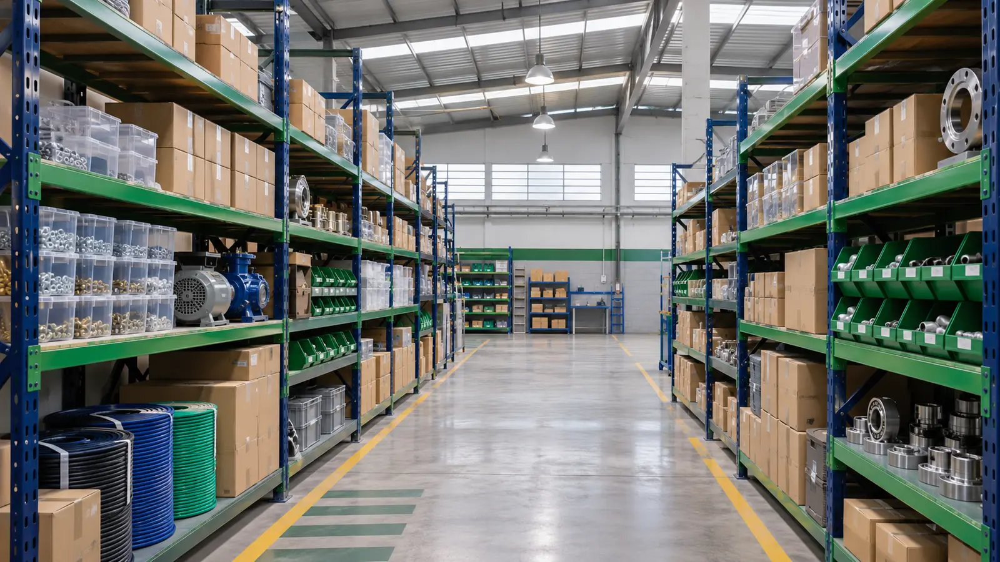

Materiais cadastrados
0
Todos os materiais do cadastro.
Controle de estoque industrial
Sua indústria em movimento, seu estoque sob controle.

0
Todos os materiais do cadastro.
0
Saldo positivo até o estoque mínimo.
0
Materiais com saldo igual a zero.
Todos os campos são obrigatórios. Após o cadastro, o saldo muda somente pelas movimentações.
Nenhum material cadastrado. Utilize o formulário para começar.
| Código | Material | Categoria | Unidade | Mínimo | Saldo | Situação | Ação |
|---|